Docker 開發環境
WasmVM 可以在 docker 中開發，透過以下幾個步驟安裝：
source <(curl -s https://raw.githubusercontent.com/toolbuddy/ssfw/master/system/install_docker.sh)
[sudo] docker pull wasmvm/develop
- 掛載本地端 WASMVM 資料夾到 docker image 當中，並產生 docker container
docker run --rm -ti -w /home/WasmVM -v <local 端的 WasmVM 的位置>:/home/WasmVM wasmvm/develop bash
mkdir -p build && cd build
cmake -DCMAKE_BUILD_TYPE=Debug ..
NUM_CORES=`grep -c ^processor /proc/cpuinfo`
make -j${NUM_CORES}
或
"$(make -j`nproc --all`)"
ctest
系統架構

WasmVM 主要分成三個元件，載入元件(Loader)、執行元件(Executor)加速元件(Accelerator)，每個元件中有不同的模組執行各種工作。圖中包住許多零件的大長方形表示各個元件，白色的小長方形表示各個模組。
元件和模組之間會進行各種資料轉換，各種資料結構用藍色平行四邊形表示。
在執行元件(Executor)中，執行的函式分成原生函式(Native)、執行函式(Runtime)和系統呼叫(Syscall)三種，以淺綠色圓角矩形表示。
以下將會介紹各個元件，資料格式的部分請參考 WebAssembly 規格
載入元件 (Loader)
在程式中直接操作 Wasm 位元碼很不方便，而且目前我們也沒辦法直接在機器上執行 Wasm 位元碼。載入元件的工作就是將 Wasm 解析成方便程式操作的格式，驗證要執行的 Wasm 模組，並且載入到執行器中。
載入元件包含以下模組：
解碼器 (Decoder)
解碼器的作用是讀取 Wasm 位元檔，解析每個 byte 所代表的意義，並轉成方便操作的 Wasm 模組，交給驗證器做驗證。
如果 Wasm 位元檔的格式不符合 Wasm 規格，解碼器會停止當下的解碼，並回報錯誤。
驗證器 (Validator)
在解碼器產生 Wasm 模組後，驗證器會依據規格書上的驗證定義，驗證 Wasm 模組的行為。
如果 Wasm 模組的行為不符合 Wasm 規格，驗證器會回報錯誤。
在驗證完成之後，驗證器會將 Wasm 模組傳給實例產生器。
實例產生器 (Instantiator)
解碼器產生的 Wasm 模組包含很多資訊，方便分析和驗證，但是不方便執行。
實例產生器會把 Wasm 模組轉換成 Wasm 實例，存進執行元件的儲存空間(Store)準備執行，同時傳給加速元件的分析器。
加速元件 (Accelerator)
及時編譯 (Just-In-Time compile) 是在程式正在執行或快要執行的時候，把程式編譯成可以直接執行的機器碼，加快之後執行時的效能。
加速元件會對 Wasm 模組做分析，把必要的函式編譯成機器碼加速執行。
加速元件包含以下模組：
分析器 (Analyzer)
分析器會分析 Wasm 模組內每個函式的使用頻率和特性，決定哪些函式會被及時編譯成原生函式(Native Function)，並安排及時編譯的優先順序。
及時編譯器 (JIT Compiler)
及時編譯器按照分析器分析完的優先順序，將 Wasm 模組的函式編譯成原生函式，再交給執行元件做利用
執行元件 (Executor)
執行元件在實例產生器處理完之後，執行主要模組的起始函式，讓程式開始運作。
執行元件包含以下模組：
儲存空間 (Store)
儲存空間的架構對應到規格裡的 Store。接受實例產生器產生的結果，存到對應的欄位中，提供核心使用。
一個執行中的程式可能會使用多個核心，但是儲存空間是所有核心共用的。
核心 (Core)
核心是最主要的執行單位，擁有自己的堆疊(Stack) 和計數器(Program Counter)。
核心會按照計數器依序提取指令，執行以下動作
- 執行對應的執行函式(Runtime Function)
- 遇到
unreachable 時觸發系統呼叫(SysCall)
- 呼叫已經及時編譯完的原生函式(Native Function)
一個執行中的程式可能會使用多個核心，不同核心間的堆疊和計數器是獨立的，但是會共用儲存空間。
系統呼叫 (SysCall)
有些和系統有關的操作(例如：輸入輸出)，或是 WebAssembly 沒有定義的操作(例如:例外處理)，無法在 WebAssembly 裡直接執行。
在規格中可以引入外在的原生函式，直接呼叫外在的原生函式來進行操作，但是 WasmVM 並不允許直接呼叫外在的原生函式。
WasmVM 必須利用 unreachable 指令觸發系統呼叫，再執行系統呼叫模組中對應的處理函式(SysCall Function)處理系統呼叫，間接的進行系統操作，做到類似軟體中斷(Software Interrupt)的效果。
要執行系統呼叫，必須在堆疊內先放進需要的值當作引數，再放進對應的 i32 的常數作為系統呼叫編號，最後執行 unreachable 指令觸發系統呼叫。
範例：
假設定義 0 號為兩數相加的系統呼叫，以函式的方式表示為 add(i32 a, i32 b)
如果想把 a 帶入 5，b 帶入 3 做相加，指令可以寫成：
i32.const 5 ;; i32 a
i32.const 3 ;; i32 b
i32.const 0 ;; 編號
unreachable ;; 執行系統呼叫
執行完在堆疊裡就會出現結果 8
System Structure
WasmVM is built on top of three different components - loader, executor, and accelerator. Each component has different modules executing different tasks. As illustrated above, the larger rectangles with many parts inside represent the individual components, while the smaller white rectangles represent the individual modules.
Data transformation is performed between components and modules, with each data structure being represented by a blue parallelogram.
In the executor component, each function is represented as a light-green rounded rectangle and is categorized into three different category - Native Function, Runtime Function, and Syscall Function.
In the following section, we go through each component of the system structure. For data format, please refer to the WebAssembly Spec.
Loader
It is inconvenient to manipulate the Wasm bitcode directly in the program, and at the moment it is impossible to execute Wasm bitcode natively on the machine. The job of the loader component is to analyze and format Wasm into a format that programs could better interact with. Then, it validates the Wasm module to be executed and loads it into the executor.
The loader component consists of the following modules:
Decoder
The purpose of the decoder is to read the Wasm bitcode, analyzing the meaning of each byte, and transforming the bitcode into an easily-operatable Wasm module, and finally passing it on to the validator.
Should the Wasm bitcode format not follow the Wasm spec, the decoder will halt all current decoding tasks and report the error.
Validator
After the decoder generates a module, the validator validates the Wasm module behaviour according to the validation definition according to the spec.
If the Wasm module behaviour does not follow the Wasm specification, the validator will halt and report the error.
After the validation has been completed, the validator will pass the Wasm module to the instantiator.
Instantiator
The Wasm module generated by the decoder contains much information used for analysis and validation, but is generally not used for execution.
The instantiator transforms the Wasm module into a Wasm implementation, storing it into the executor Store and passing it to the accelerator analyzer.
Accelerator
JIT (Just-In-Time compile) occurs when the program is about to be executed or during the execution of the program. It compiles the application into machine code that can be executed natively, accelerating the performance during execution.
The accelerator performs an analysis on the Wasm module, compiling the necessary functions into machine code for best performance.
The accelerator consists of the following modules:
Analyzer
The analyzer analyzes the frequency traits of each function of the Wasm module, deciding which functions will be JIT compiled into Native Functions, and decide the priority of JIT compilation.
JIT Compiler
The JIT Compiler compiles the functions used by the Wasm module into Native Functions according to the priority generated by the analyzer and passing the functions to the executor.
Executor
After the implementation generator has finished processing, the executor executes the inital function within the main module, starting the application.
The executor consists of the following modules:
Store
The store structure corresponds to the store within the Wasm specification. It takes the results from the implementation generator, stores it into the corresponding table for later use with the core.
Each running application may utilize multiple Cores, but the storage space will be shared.
Core
The core is the main execution unit; it has its own stack and program counter.
The core obtains commands based on the program counter, performing the following,
- Executing Runtime Functions accordingly
- Triggering SysCall when encountering
unreachable
- Calling JIT'd Native Functions
Each running application may utilize multiple cores. Each core has its own stack and program counter, but the storage space will be shared.
SysCall
Some operations related to system (e.g. input/output) or operations not defined by WebAseembly cannot be executed within WebAssembly.
According to the spec, it is possible to import foreign Native Functions, calling the functions directly for operation; however, WasmVM does not allow calling any foreign Native Functions.
WasmVM must use unreachable to trigger a SysCall, then calls the corresponding SysCall function within the SysCall module to handle system calls, issuing operations indirectly - this is similar to a software interrupt.
To execute a SysCall, you must first put in the required value within the stack as index, then put in the corresponding i32 constant as a SysCall identifer; finally, use the unreachable command to trigger a SysCall.
Example:
Let's say we set 0 as the identifier of the SysCall for summation of two integer; in function-form, this is expressed as add(i32 a, i32 b).
Now if we want to assign a as 5, b as 3, and that we want to sum both the variables, we can write the following commands:
i32.const 5 ;; i32 a
i32.const 3 ;; i32 b
i32.const 0 ;; identifier
unreachable ;; execute SysCall
After execution, the result 8 will appear in the stack.
設計理念
現在 WebAssembly 主要是在網頁瀏覽器，協助 JavaScript 用比較貼近機器底層的方式處理運算的部份
既然是"協助" JavaScript， 所以你要跑WebAssembly , 就算不透過瀏覽器，還是需要 JavaScript 的幫忙
我覺得 WebAssembly 做為完整的組合語言，在瀏覽器以外的地方應該不需要 JavaScript 就能自己跑，而且應該能做到瀏覽器和桌面能共用同一份程式檔
想像一下未來你可能可以把一個.wasm檔直接點兩下打開會動，放到網站上大家用瀏覽器看也會動，不用再特別寫成網站，甚至感覺上根本沒有網站/桌面的分隔
要在桌面上執行有個問題:
一般的桌面程式直接就是機器能看的懂的機器碼
但是 WebAssembly 對機器來說根本看不懂，就像有人和你說印度話，你完全黃人問號 :thinking:
所以我們需要一個師爺來翻譯翻譯
師爺有很多種，一種是即時口譯，說一句翻一句做一句，在高階語言是直譯器，組合語言叫做虛擬機器
一種是說的時候先記錄在紙上，再叫別人去做，在高階語言叫做編譯器，組合語言叫做組譯器(edited)
還有一種師爺是記錄在腦海裡，記錄完自己馬上去做
這個叫做即時編譯器(Just-in-time compiler, 簡稱 JIT compiler)
WasmVM最主要的工作就是當那個師爺，而且我們有兩個師爺，平常先叫虛擬機器做事，但是即時編譯器同時也在編譯
等即時編譯器編完，這段程式如果再重複被使用，就不用翻譯，直接跑翻完的就好
另外，為了要在桌面跑，我們還必須設計 SysCall 的機制 ，透過 SysCall 來做到 WebAssembly 管不到的系統操作，這些在瀏覽器是用 JavaScript 解決，我們得自己幹
所以 WasmVM 不只能執行 WebAssembly，我們還會定義一套完整又輕巧的架構，這也是 WasmVM 最重要的價值
使用 VSCode 搭配 Docker 開發 WasmVM
在 VSCode 推出 VSCode Remote Container 擴充套件之後，可以透過 VSCode 和 Docker 建立簡單的開發環境
Step 1: 安裝並打開 Docker
Windows
1-1. 下載安裝檔後點開安裝檔，照著步驟安裝
連結
1-2. 打開 Docker
<img src=https://docs.docker.com/docker-for-windows/images/docker-app-search.png width="25%">
Mac
1-1. 下載安裝檔
連結
1-2. 點開安裝檔，把 Docker 的圖示拖曳到資料夾的圖示
<img src=https://docs.docker.com/docker-for-mac/images/docker-app-drag.png />
1-3. 打開 Docker

Ubuntu
請參考 https://docs.docker.com/install/linux/docker-ce/ubuntu/#install-using-the-repository
Step 2: 安裝 VSCode
到下載頁面 https://code.visualstudio.com/Download
照自己的作業系統下載安裝檔來安裝
Step 3: 下載專案
用 git clone，或是下載壓縮檔之後解壓縮
Step 4: 用 VSCode 打開專案
在左上角的 檔案(File) 選單選 打開資料夾 (Open Folder)
Step 5: 安裝 Remote Development 擴充套件
照著圖上的方式點選按鈕
Step 6: 用 Remote Development 打開專案
點選左下角的綠色按鈕之後，選 Reopen Folder in Container
<img src="images/reopen-in-container.png" width="50%"/>
Step 7: 設定 CMake
點選左下角的 CMake: Debug: Ready，再點選 GCC for x86_64 > Debug
<img src="images/configure-cmake.png" width="50%"/>
Step 8: 編譯
點選靠近中間的 Build: all 可以編譯
<img src="images/build-project.png" width="50%"/>